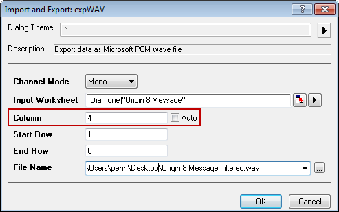

Klangverarbeitung
sound-processing
Zusammenfassung
Origin enthält einige nützliche Hilfsmittel zur Signalverarbeitung wie Glättung, FFT-Filterung etc. sowie für die Spektralanalyse wie die Schnelle Fourier-Transformation (FFT) . Dies kann bei der Durchführung einer Klanganalyse hilfreich sein. Dieses Tutorial wird ein spezifisches Rauschen, basierend auf dem Spektralbereich des Rauschens, aus einem Audiosignal (.WAV-Datei) entfernen.
Origin-Version mind. erforderlich: 9.0 SR0
Was Sie lernen werden
- Eine Klangdatei (.WAV) in Origin importieren
- Informationen zum Abtastintervall anzeigen
- Das Minitool FFT verwenden, um die Frequenzspektren eines Signals zu prüfen
- FFT-Filter auf das Audiosignal durchführen
- Ein gefiltertes Signal als .WAV-Datei exportieren
Schritte
In diesem Tutorial werden die Dateien "Origin8 Message.wav" und "Dial Tone.wav" verwendet, die sich im Unterordner "\Samples\Signal Processing\" des Origin-Installationsverzeichnisses befinden.
Spielen Sie die Klangdatei "Origin 8 Message.wav" ab. Sie werden ein Wählgeräusch im Hintergrund hören. Die zweite Datei ist eine Aufzeichnung des Wähltons.
- Starten Sie Origin und erstellen Sie ein neues Projekt mit einem leeren Arbeitsblatt in einer Arbeitsmappe.
- Wählen Sie im Menü Datei: Import: Sound (WAV)..., um den Dialog für den Sound zu öffnen. (Hinweis: Wenn dieses Menüelement nicht gezeigt wird, wählen Sie Datei: Import: Anpassen..., um den Dialog Benutzerdefinierte Anpassung des Importmenüs zu öffnen und es hinzuzufügen.) Navigieren Sie zu dem Ordner "\Samples\Signal Processing\" und klicken Sie doppelt auf "Origin 8 Message.wav" und "Dial Tone.wav", um sie zur Importliste hinzuzufügen. Stellen Sie sicher, dass Optionendialog zeigen aktiviert ist, und klicken Sie auf OK.
- Klicken Sie im Dialog Import and Export: impWav auf die dreieckige Schaltfläche rechts vom Dialogdesign und wählen Sie Systemstandard im Kontextmenü. Setzen Sie im Zweig Importoptionen die Auswahlliste Mehrere Dateien (Ausnahme 1.) Importmodus auf die Option Neue Datenblätter öffnen.
- Klicken Sie auf OK, um die zwei Klangdateien in zwei Arbeitsblätter zu importieren:
- In jedem Arbeitsblatt hat das Abtastintervall den gleichen Wert von 2.26757E-5 . Klicken Sie auf das Symbol i oben links in der Spalte. Der Dialog Erweiterte Spalteninformationen wird aufgerufen. Er enthält die Informationen zum Abtastintervall. Klicken Sie auf OK, um den Dialog zu schließen.
- Markieren Sie bei aktiviertem Arbeitsblatt Dial Tone die Spalte A und wählen Sie im Menü Zeichnen: Linie: Liniendiagramm, um ein Liniendiagramm zu erstellen.
- Aktivieren Sie dieses Diagramm und wählen Sie im Menü Minitools: FFT..., um den Dialog Data Exploration: addtool_curve_fft zu öffnen. Behalten Sie die Standardeinstellungen bei und klicken Sie auf OK, um eine FFT der Daten durchzuführen, und erstellen Sie das Diagramm FFTPREVIEW mit den Ergebnissen.

- Deaktivieren Sie das Kontrollkästchen Log Scale auf dem Diagramm FFTPREVIEW und wählen Sie im Menü Grafik: Neu skalieren, um das Diagramm neu zu skalieren. Sie können sehen, dass die Verteilung der Frequenz sich hauptsächlich unter 2000 Hertz befindet, wobe die größten Peaks unter 500 Hertz liegen.
- Aktivieren Sie das Arbeitsblatt Origin 8 Message und markieren Sie Spalte A. Wählen Sie Analyse: Signalverarbeitung: FFT-Filter, um den Dialog Signal Processing: fft_filters zu öffnen. Ändern Sie im Dialog den Modus Neu berechnen in Kein, wählen Sie den Filtertyp Hochpass, deaktivieren Sie das Kontrollkästchen Auto bei Grenzfrequenz und ändern Sie den Wert in 500. Deaktivieren Sie das Kontrollkästchen DC-Offset behalten. Durch Aktivieren des Kontrollkästchens Automatische Vorschau unten können Sie sich eine Vorschau anzeigen lassen. Das Ergebnis wird im rechten Bedienfeld gezeigt, das Sie je nach Belieben mit Hilfe der Schaltfläche mit den blauen Pfeilen anzeigen oder verbergen können.
Hinweis: Wenn Neu berechnen nicht auf Kein gesetzt ist, müssen die Ergebnisse in neue Spalten ohne Neuberechnungssperre kopiert werden, um den Datentyp zu ändern. Siehe Schritt 11 unten.
- Klicken Sie auf OK, um die Ergebnisse zu erzeugen. Das gefilterte Ergebnis wird als Fließpunkte angezeigt. Um eine neue WAV-Datei zu erstellen, müssen Sie dieses Ergebnis in ein ganzzahliges Format konvertieren.
- Markieren Sie Spalte D (die gefilterte Ergebnisspalte) und wählen Sie dann Einstellungen... im Kontextmenü, das Sie über einen Rechtsklick aufrufen, um den Dialog Spalteneigenschaften zu öffnen. Erweitern Sie den Zweig Optionen, setzen Sie das Format auf Numerisch und ändern Sie den Datentyp in Short(2). Klicken Sie auf OK, um diese Einstellungen auf Spalte D anzuwenden und den Dialog zu schließen.
- Lassen Sie Spalte D markiert und wählen Sie Datei: Export: Sound (WAV).... Geben Sie in dem geöffneten Dialog einen Dateinamen ein (z.B Origin 8 Message_filtered.wav) und speichern Sie die Datei in dem gewünschten Verzeichnis. Stellen Sie sicher, dass das Kontrollkästchen Optionendialog zeigen aktiviert ist.
- Klicken Sie auf die Schaltfläche Speichern, und der Dialog Import and Export: expWAV wird geöffnet. Deaktivieren Sie das Kontrollkästchen Auto für Spalte und geben Sie 4 ein.
- 
Hinweis: Die Spalte wird für die Y-Spalte festgelegt. Origin findet ihr Abtastintervall, falls eines vorhanden ist, oder die verbundene X-Spalte. Wenn keine X-Spalte existiert oder die X-Spalte nicht äquidistant verteilt ist, wird eine Fehlermeldung angezeigt.
- Klicken Sie auf OK, um Spalte D als eine .wav-Datei zu exportieren. Sie können diese .wav-Datei jetzt abspielen und hören, dass der Wählton entfernt wurde. Beachten Sie, dass die Informationen, die das gleiche Spektrum wie der Wählton haben, ebenfalls entfernt wurden.